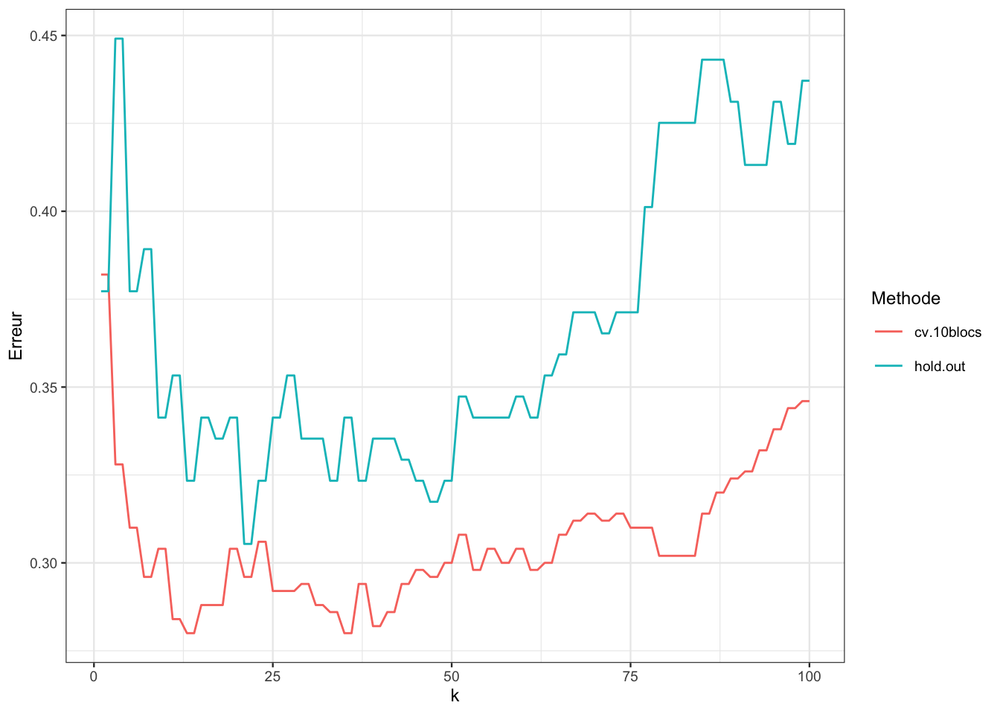
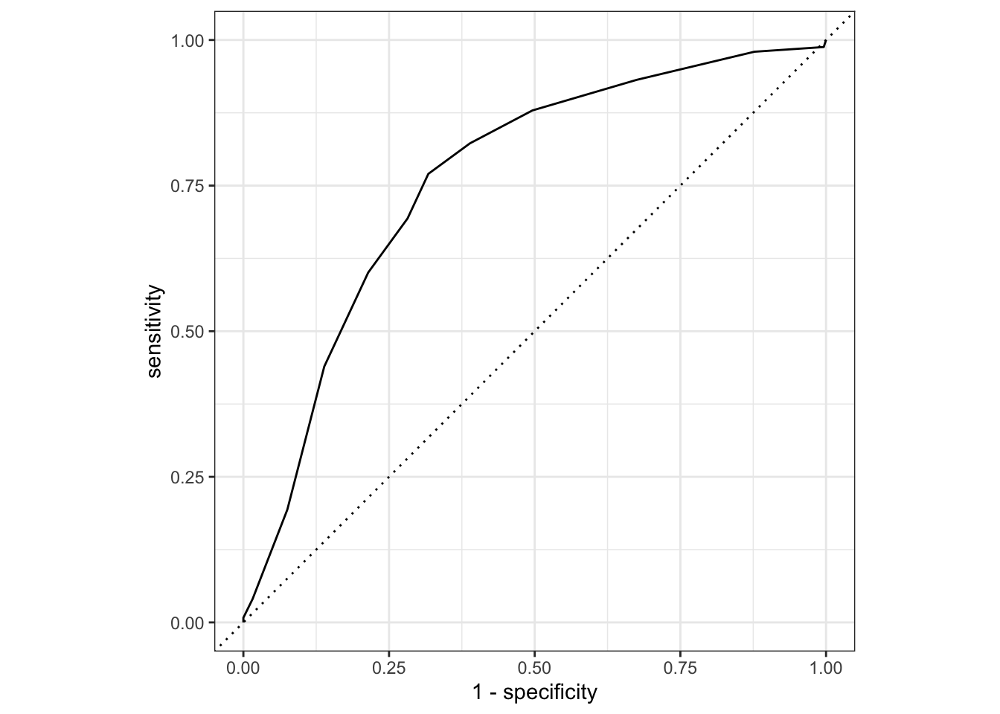

2 Estimation du risque par ré-échantillonnage
Rappelons que, pour une fonction de perte \(\ell\) donnée, le risque de \(f_n\) est défini par
\[ \mathcal R(f_n)=\mathbf E[\ell(Y,f_n(X,\mathcal D_n))]=\mathbf E_{\mathcal D_n}[\mathbf E_{(X,Y)}[\ell(Y,f_n(X,\mathcal D_n))]]. \]
Il représente la perte moyenne de \(f_n\) par rapport aux lois de \((X,Y)\) et de \(\mathcal D_n\). Ces lois étant inconnues, l’utilisateur n’a jamais accès à \(\mathcal R(f_n)\) et doit donc l’estimer. Nous présentons dans ce chapitre les méthodes classiques qui reposent sur des techniques de ré-échantillonnage.
2.1 Validation croisée
Exercice 2.1 (Calculs de blocs avec rsample) Le package rsample permet d’obtenir des partitions des données pour calculer des estimations de risques. On s’intéresse dans cet exercice aux fonctions
- mc_cv pour partager les données en 2 (validation hold out)
- vfold_cv pour partager les données en blocs (validation croisée)
On reprend les données générées avec la fonction du chapitre précédent :
donnees <- gen_class_bin2D(n=500,graine=12345,bayes=0.20)$donneesÀ l’aide de mc_cv séparer les données en 2 échantillons apprentissage/test avec 2/3 des données dans l’échantillon d’apprentissage.
library(rsample) set.seed(12345) re_ech_ho <- mc_cv(donnees,prop=2/3,times = 1) re_ech_ho ## # Monte Carlo cross-validation (0.67/0.33) with 1 resamples ## # A tibble: 1 × 2 ## splits id ## <list> <chr> ## 1 <split [333/167]> Resample1Afficher l’index des individus de l’échantillon d’apprentissage. Faire de même pour l’échantillon test.
ind_app <- re_ech_ho$splits[[1]]$in_id head(ind_app) ## [1] 142 51 208 218 220 152 length(ind_app) ## [1] 333Pour l’échantillon test, il suffit de considérer les individus qui ne sont pas dans l’échantillon d’apprentissage
ind_test <- c(1:500)[-re_ech_ho$splits[[1]]$in_id] head(ind_test) ## [1] 1 4 11 20 22 26 length(ind_test) ## [1] 167À l’aide de vfold_cv séparer les données en 10 blocs.
set.seed(12345) (re_ech_cv <- vfold_cv(donnees,v=10)) ## # 10-fold cross-validation ## # A tibble: 10 × 2 ## splits id ## <list> <chr> ## 1 <split [450/50]> Fold01 ## 2 <split [450/50]> Fold02 ## 3 <split [450/50]> Fold03 ## 4 <split [450/50]> Fold04 ## 5 <split [450/50]> Fold05 ## 6 <split [450/50]> Fold06 ## 7 <split [450/50]> Fold07 ## 8 <split [450/50]> Fold08 ## 9 <split [450/50]> Fold09 ## 10 <split [450/50]> Fold10Afficher l’index des individus qui se trouvent dans le bloc 4.
bloc4 <- re_ech_cv$splits[[4]]$in_id head(bloc4) ## [1] 1 2 3 4 5 6 length(bloc4) ## [1] 450
On considère la perte indicatrice : \(\ell(y,y^\prime)=\mathbf 1_{y\neq y^\prime}\), le risque d’un algorithme \(f\) est donc \[\mathcal R(f)=\mathbf E[\mathbf 1_{Y\neq f(X)}]=\mathbf P(Y\neq f(X)),\] il est appelé probabilité d’erreur ou erreur de classification. On s’intéresse à l’estimation de ce risque par des méthodes de ré-échantillonnage pour l’algorithme des \(k\) plus proches voisins.
Exercice 2.2 (Progammation de validation hold out et validation croisée)
Créer une fonction qui admet en entrée
- un jeu de données
- une valeur de
k - une séparation des données en apprentissage/test issue de
mc_cv
et renvoie en sortie l’erreur de classification de la règle des \(k\) plus proches voisins calculées sur l’échantillon test. On pourra la tester pour
k=3.library(kknn) hold.out.kppv <- function(donnees,re_ech,k=3){ index.app <- re_ech$splits[[1]]$in_id dapp <- donnees[index.app,] dtest <- donnees[-index.app,] prev <- kknn(Y~.,train=dapp,test=dtest,k=k, kernel="rectangular")$fitted.values return(mean(prev!=dtest$Y)) } hold.out.kppv(donnees,re_ech_ho,k=3) ## [1] 0.4491018Refaire la question précédente avec une validation croisée K blocs.
cv.kppv <- function(donnees,re_ech,k=3){ K <- length(re_ech$splits) err.bloc <- rep(0,K) for (j in 1:K){ ind.app <- re_ech$splits[[j]]$in_id dapp <- donnees[ind.app,] dtest <- donnees[-ind.app,] prev.j <- kknn(Y~.,train=dapp,test=dtest,k=k, kernel="rectangular")$fitted.values err.bloc[j] <- mean(prev.j!=donnees$Y[-ind.app]) } return(mean(err.bloc)) } cv.kppv(donnees,re_ech_cv,k=3) ## [1] 0.328On considère la grille de valeurs de
kgrille.k <- c(1:100)Sélectionner dans cette grille une valeur de \(k\) en minimisant l’erreur de classification calculée par validation hold out, puis par validation croisée 10 blocs. On pourra également visualiser les courbes de risque (erreur de classification en fonction du nombre de voisins).
Il suffit de calculer les erreurs pour chaque valeur de
kavec une bouclemat.err <- matrix(0,nrow=length(grille.k),ncol=2) |> as_tibble() names(mat.err) <- c("hold.out","cv.10blocs") compt <- 1 for (k in grille.k){ mat.err[compt,1] <- hold.out.kppv(donnees,re_ech_ho,k=k) mat.err[compt,2] <- cv.kppv(donnees,re_ech_cv,k=k) compt <- compt+1 }On peut les visualiser
mat.err1 <- mat.err |> mutate(k=grille.k) |> pivot_longer(-k,names_to="Methode",values_to="Erreur") ggplot(mat.err1)+aes(x=k,y=Erreur,color=Methode)+geom_line()
et en déduire les valeurs optimales
mat.err1 |> group_by(Methode) |> slice(which.min(Erreur)) ## # A tibble: 2 × 3 ## # Groups: Methode [2] ## k Methode Erreur ## <int> <chr> <dbl> ## 1 13 cv.10blocs 0.28 ## 2 21 hold.out 0.305
2.2 Le package tidymodels
Il s’agit d’un meta-package qui regroupe plusieurs packages (parsnip, recipes, rsample…) qui utilisent une approche tidy pour sélectionner un algorithme de prévision. Il propose de créer un projet de travail, appelé workflow, permettant de construire un algorithme de prévision. Cette construction requiert tout un ensemble d’étapes comme la gestion des données manquantes, la création ou suppression de variables explicatives, la recherche de colinéarité parmi les variables explicatives, la sélection des paramètres de l’algorithme… Toutes ces étapes s’enchaînent en mettant à jour le workflow. Nous ne présentons pas toutes les fonctionnalités de tidymodels, on pourra les retrouver dans le tutoriel présentant le package à l’url https://www.tidymodels.org. Nous nous concentrons uniquement sur le choix de paramètres d’algorithmes de prévision à travers l’exemple des plus proches voisins.
La première étape est consacrée à la définition de l’algorithme. Pour des plus proches voisins en classification on utilise
library(tidymodels)
tune_spec <-
nearest_neighbor(neighbors=tune(),weight_func="rectangular") |>
set_mode("classification") |>
set_engine("kknn") Dans la fonction nearest_neighbor nous précisions que nous souhaitons utiliser le noyau rectangular comme nous l’avons fait jusqu’à présent. L’option neighbors=tune() spécifie que le nombre de plus proches voisins est un paramètre à calibrer. Plusieurs packages R permettent d’entraîner des \(k\) plus proches voisins, on utilise set_engine("kknn") pour indiquer que l’on souhaite utiliser la fonction kknn. On pourra trouver l’ensemble des algorithmes disponibles dans tidymodels ainsi que les noms de leurs paramètres ici : https://www.tidymodels.org/find/parsnip/.
On initialise le projet de travail dans la seconde étape en créant le workflow :
ppv_wf <- workflow() |>
add_model(tune_spec) |>
add_formula(Y ~ .)On renseigne dans add_model les différentes informations sur l’algorithme des plus proches voisins et on indique dans add_formula la variable à expliquer et les variables explicatives. Nous avons vu dans la section précédente que la recherche du meilleur nombre de voisins s’effectue en estimant un risque de prévision sur une grille de valeurs candidates. On considère toujours des valeurs de \(k\) variant entre 1 et 100 :
grille_k <- tibble(neighbors=1:100)Le choix de \(k\) s’effectue avec la fonction tune_grid du package tune qui possède notamment les arguments suivants :
tune_grid(...,resamples=...,grid=...,metrics=...)On indique dans :
resamplesle ré-échantillonnage. Par exemple les échantillons d’apprentissage et test pour la validation hold out (avec la fonctionmc_cv), les blocs pour la validation croisée (vfolds_cv), les tirages bootstraps (bootstraps) ;gridla grille de paramètres candidats ;metricsle risque de prévision (erreur quadratique, erreur de classification, \(\text{AUC}\)…).
Exercice 2.3 (Validation hold out et validation croisée avec tidymodels)
Retrouver les erreurs par validation hold out en utilisant
tune_gridetcollect_metrics.ppv.ho <- ppv_wf |> tune_grid( resamples = re_ech_ho, grid = grille_k, metrics=metric_set(accuracy)) ppv.ho |> collect_metrics() ## # A tibble: 100 × 7 ## neighbors .metric .estimator mean n std_err .config ## <int> <chr> <chr> <dbl> <int> <dbl> <chr> ## 1 1 accuracy binary 0.623 1 NA Prepro… ## 2 2 accuracy binary 0.623 1 NA Prepro… ## 3 3 accuracy binary 0.551 1 NA Prepro… ## 4 4 accuracy binary 0.551 1 NA Prepro… ## 5 5 accuracy binary 0.623 1 NA Prepro… ## 6 6 accuracy binary 0.623 1 NA Prepro… ## 7 7 accuracy binary 0.611 1 NA Prepro… ## 8 8 accuracy binary 0.611 1 NA Prepro… ## 9 9 accuracy binary 0.659 1 NA Prepro… ## 10 10 accuracy binary 0.659 1 NA Prepro… ## # ℹ 90 more rowsVisualiser les meilleures valeurs de
kà l’aide deshow_bestppv.ho |> show_best() |> dplyr::select(1:6) ## # A tibble: 5 × 6 ## neighbors .metric .estimator mean n std_err ## <int> <chr> <chr> <dbl> <int> <dbl> ## 1 21 accuracy binary 0.695 1 NA ## 2 22 accuracy binary 0.695 1 NA ## 3 47 accuracy binary 0.683 1 NA ## 4 48 accuracy binary 0.683 1 NA ## 5 13 accuracy binary 0.677 1 NASélectionner la meilleur valeur de
kavecselect_best.(best_k <- ppv.ho |> select_best()) ## # A tibble: 1 × 2 ## neighbors .config ## <int> <chr> ## 1 21 Preprocessor1_Model021Finaliser l’algorithme à l’aide de
finalize_workflowetfit.(final_ppv <- ppv_wf |> finalize_workflow(best_k) |> fit(data = donnees)) ## ══ Workflow [trained] ══════════════════════════════════════ ## Preprocessor: Formula ## Model: nearest_neighbor() ## ## ── Preprocessor ──────────────────────────────────────────── ## Y ~ . ## ## ── Model ─────────────────────────────────────────────────── ## ## Call: ## kknn::train.kknn(formula = ..y ~ ., data = data, ks = min_rows(21L, data, 5), kernel = ~"rectangular") ## ## Type of response variable: nominal ## Minimal misclassification: 0.294 ## Best kernel: rectangular ## Best k: 21Faire le même travail pour la validation croisée 10 blocs.
Il suffit de changer l’option
resamplesdanstune_grid.ppv.cv <- ppv_wf |> tune_grid( resamples = re_ech_cv, grid = grille_k, metrics=metric_set(accuracy)) ppv.cv |> collect_metrics() ## # A tibble: 100 × 7 ## neighbors .metric .estimator mean n std_err .config ## <int> <chr> <chr> <dbl> <int> <dbl> <chr> ## 1 1 accuracy binary 0.618 10 0.0247 Prepro… ## 2 2 accuracy binary 0.618 10 0.0247 Prepro… ## 3 3 accuracy binary 0.672 10 0.0215 Prepro… ## 4 4 accuracy binary 0.672 10 0.0215 Prepro… ## 5 5 accuracy binary 0.69 10 0.0209 Prepro… ## 6 6 accuracy binary 0.69 10 0.0209 Prepro… ## 7 7 accuracy binary 0.704 10 0.0176 Prepro… ## 8 8 accuracy binary 0.704 10 0.0176 Prepro… ## 9 9 accuracy binary 0.696 10 0.0242 Prepro… ## 10 10 accuracy binary 0.696 10 0.0242 Prepro… ## # ℹ 90 more rowsOn obtient la valeur de
ksélectionnée avec(best_k <- ppv.cv |> select_best()) ## # A tibble: 1 × 2 ## neighbors .config ## <int> <chr> ## 1 13 Preprocessor1_Model013
Exercice 2.4 (Validation croisée pour l’AUC) Sélectionner la valeur de \(k\) qui maximise l’AUC calculé par validation croisée 10 blocs.
Il suffit de changer la métrique dans tune_grid (on pourra trouver la liste des métriques disponibles dans yardstick ici : https://yardstick.tidymodels.org/articles/metric-types.html) :
ppv.auc.cv <- ppv_wf |>
tune_grid(
resamples = re_ech_cv,
grid = grille_k,
control=control_resamples(save_pred = TRUE),
metrics=metric_set(roc_auc))
ppv.auc.cv |> collect_metrics()
## # A tibble: 100 × 7
## neighbors .metric .estimator mean n std_err .config
## <int> <chr> <chr> <dbl> <int> <dbl> <chr>
## 1 1 roc_auc binary 0.619 10 0.0241 Preproc…
## 2 2 roc_auc binary 0.658 10 0.0172 Preproc…
## 3 3 roc_auc binary 0.698 10 0.0226 Preproc…
## 4 4 roc_auc binary 0.709 10 0.0217 Preproc…
## 5 5 roc_auc binary 0.734 10 0.0209 Preproc…
## 6 6 roc_auc binary 0.740 10 0.0200 Preproc…
## 7 7 roc_auc binary 0.744 10 0.0209 Preproc…
## 8 8 roc_auc binary 0.749 10 0.0225 Preproc…
## 9 9 roc_auc binary 0.755 10 0.0217 Preproc…
## 10 10 roc_auc binary 0.752 10 0.0221 Preproc…
## # ℹ 90 more rowsOn a ajouté control=control_resamples(save_pred = TRUE) pour stocker les valeurs prédites et tracer les courbes ROC si besoin. La meilleur valeur de \(k\) s’obtient toujours avec :
(best_k_auc <- ppv.auc.cv |> select_best())
## # A tibble: 1 × 2
## neighbors .config
## <int> <chr>
## 1 12 Preprocessor1_Model012La courbe ROC pour la valeur sélectionnée s’obtient avec
(score <- collect_predictions(ppv.auc.cv))
## # A tibble: 50,000 × 7
## id .pred_0 .pred_1 .row neighbors Y .config
## <chr> <dbl> <dbl> <int> <int> <fct> <chr>
## 1 Fold01 1 0 2 1 1 Preprocesso…
## 2 Fold01 0 1 33 1 0 Preprocesso…
## 3 Fold01 1 0 44 1 0 Preprocesso…
## 4 Fold01 1 0 52 1 1 Preprocesso…
## 5 Fold01 0 1 68 1 1 Preprocesso…
## 6 Fold01 0 1 79 1 1 Preprocesso…
## 7 Fold01 0 1 81 1 0 Preprocesso…
## 8 Fold01 1 0 98 1 0 Preprocesso…
## 9 Fold01 1 0 102 1 0 Preprocesso…
## 10 Fold01 1 0 127 1 0 Preprocesso…
## # ℹ 49,990 more rows
score |> filter(neighbors==best_k_auc$neighbors) |>
roc_curve(Y, .pred_1,event_level="second") |>
autoplot()